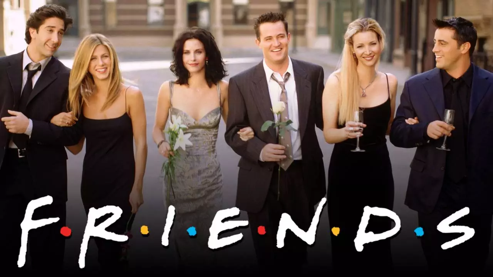
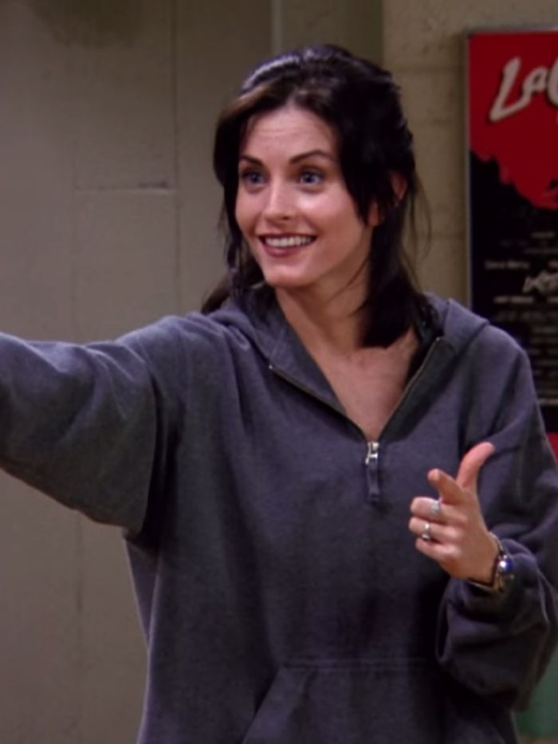
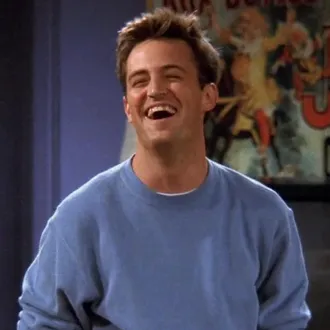

Follows the personal and professional lives of six twenty to thirty - something - year - old friends living in Manhattan.
 |
Phoebe Buffay-Hannigan (née Buffay) is one of the main characters on the popular sitcom Friends (1994–2004), portrayed by Lisa Kudrow. She is best known for her bohemian lifestyle, silly wit and guitar playing in Central Perk. |  |
Joseph Francis "Joey" Tribbiani Jr., was one of the main characters on Friends (1994–2004) and the title character in the spin-off Joey (2004–2006). He was portrayed by Matt LeBlanc. |  |
Rachel Karen Greene (see section Name) is a fictional character on the U.S. television sitcom Friends (1994–2004). She was played by Jennifer Aniston, who received Emmy Awards and a Golden Globe for her performance. |
|---|---|---|---|---|---|
 |
Ross Geller, Ph.D. was one of the main characters on Friends (1994–2004). He was portrayed by David Schwimmer. He's best known for his nerdy personality and very awkward sense of humor, much like Screech from Saved By The Bell, or David from Beverly Hills, 90210. |  | Monica E. Geller is a fictional character on the popular U.S. television sitcom Friends (1994–2004), played by Courteney Cox. Monica was known as the "Mother Hen" of the group and her Greenwich Village apartment was one of the group's main gathering places. |  | Chandler Muriel Bing is one of the six main characters on Friends. He was portrayed by Matthew Perry. He is notable for his sarcastic and witty sense of humor. |
Episodes
EP1:
EP2:
EP3:
EP4:
EP5:
EP6:
EP7:
EP8: